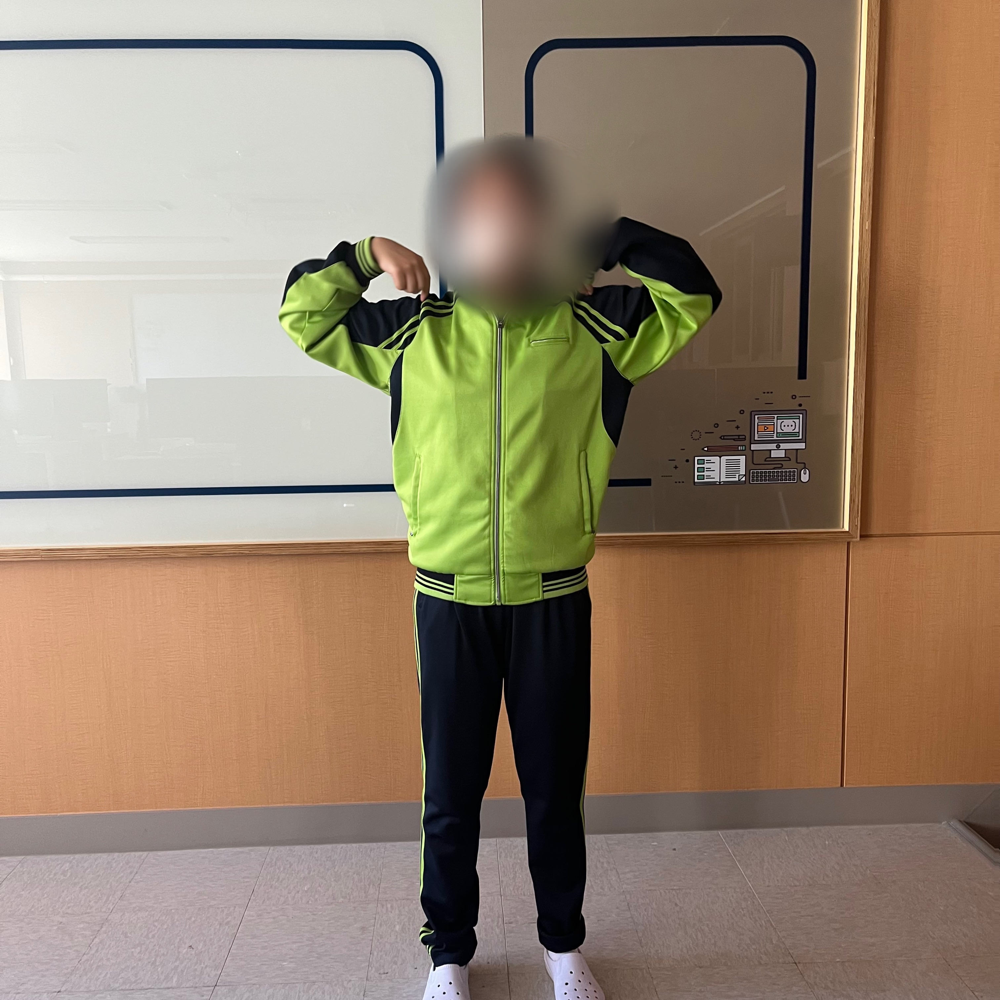
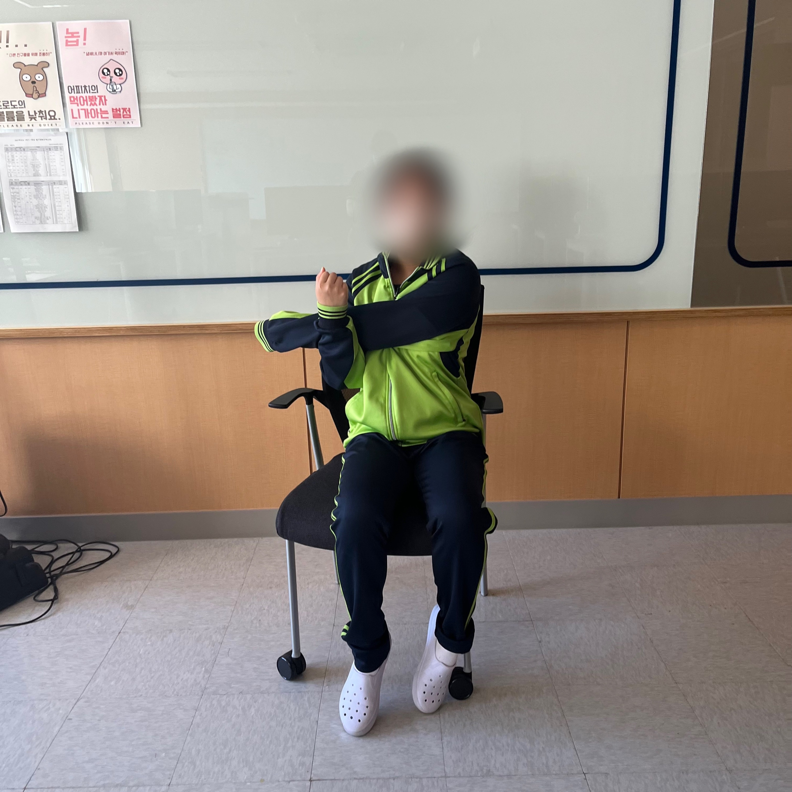
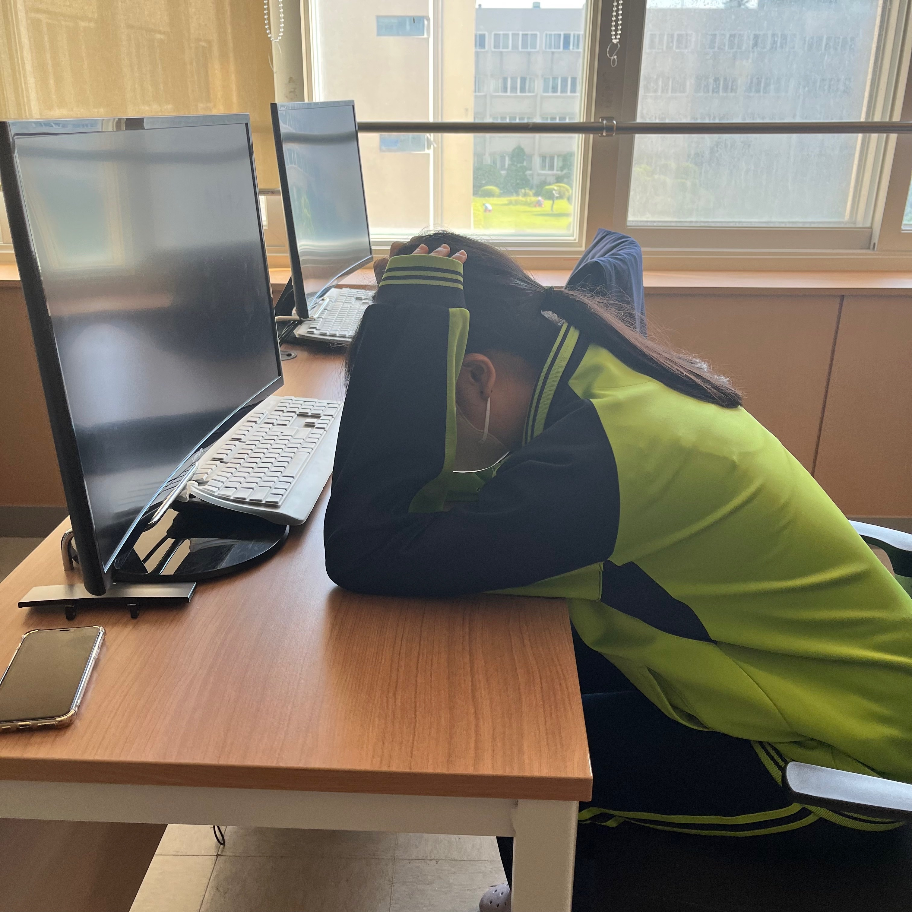

탈출! 거북목
신체 : 어깨
시간 : 3분
|  |
1. 3세트 | 10회1. 어깨를 최대한 높이 끌어올린다. 2. 천천히 뒤로 등 근육을 조이면서 어깨를 내린다. 3. 뒤에서 앞으로 돌릴 때는 먼저 등 근육을 뒤로 조인다. 4. 위로 어깨를 끌어올려 앞으로 내려준다. |
|  |
2. 3세트 | 10초1. 팔꿈치를 펴고 반대팔을 이용하여 몸통 방향으로 끌어당긴다. 2. 머리와 몸통은 동시에 팔꿈치를 당기는 방향과 반대방향으로 돌려준다. 3. 늘어나는 어깨 부위에 완전히 힘을 빼도록 한다. |
|  |
1. 3세트 | 10초1. 책상을 마주 보고 의자에 앉는다. 2. 책상과 몸통 사이 거리를 약간 멀리 앉는다. 3. 팔꿈치를 펴서 책상에 얹고 천천히 어깨를 누르며 몸통을 엎드린다. 4. 이때 늘어나는 어깨 부위에 힘을 완전히 뺀 상태로 실시해야 한다. |